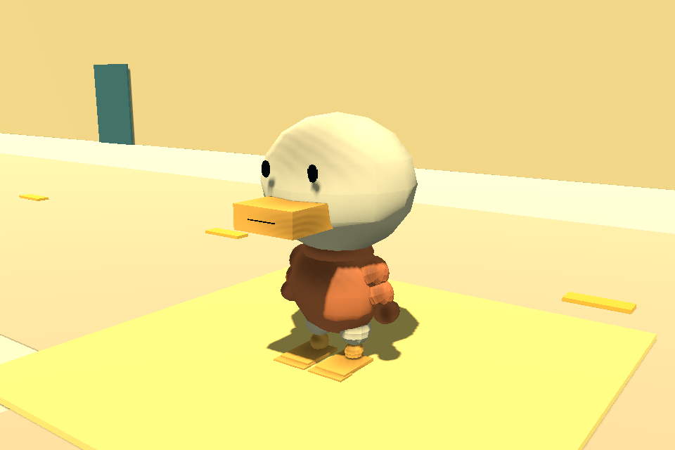

Mr. Duck Goes
to College
A neighborhood to explore, a campus to find, and a little momentum along the way.
Walk or skate, ask a neighbor, and try the handmade character look. This early demo is ready for you to mess with.
Play the beta →No installation or account needed. Desktop browser recommended. Allow a moment for the first load.

Get moving
- Move
- WASD / arrows · left stick
- Look
- Right mouse drag / IJKL · right stick
- Jump
- Space · A
- Ask / inspect
- E · X
- Board
- Q / Alt · View / Select
- Pause
- Escape / P · Start
Click inside the game to focus it and enable sound. If using a controller, press a button after connecting it.
A few things to try
Explore the courtyard and downtown, find the route to campus, or stop and talk to a neighbor.
Try a tight skate turn, a wall jump, and a double jump. Steering stays consistent after tricks; the new jump sounds start with a board crack and rise upward.
Open Settings and scroll to Clay texture strength. Try a stronger surface, or switch clay materials off for comparison.
Menus: A selects, B goes back, and left/right adjusts sliders. Your discoveries and settings save in this browser; private browsing or clearing site data may reset them.
Tell us what you notice
Something confusing, broken, or fun? Include your browser, controls, what you tried, and what happened.
Report a playtest finding on GitHub · Download a feedback template